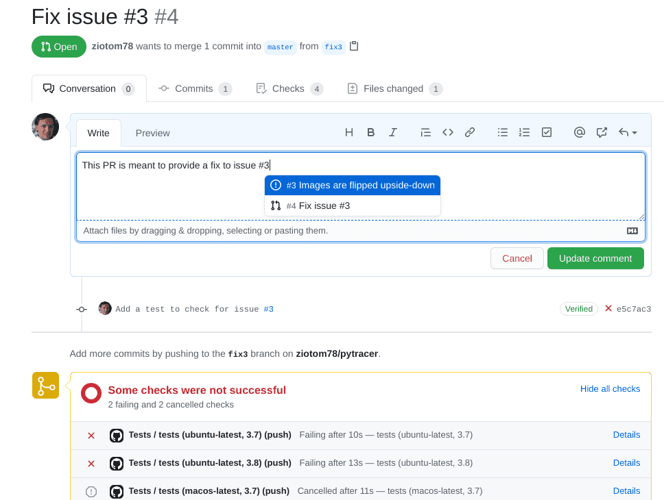
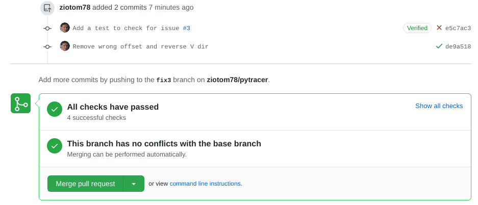
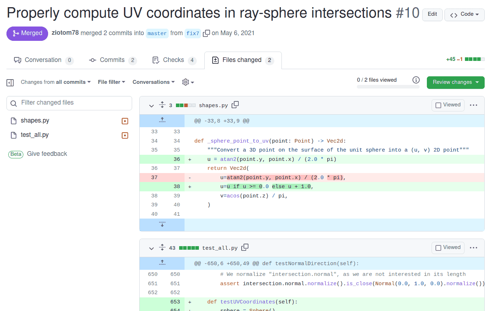
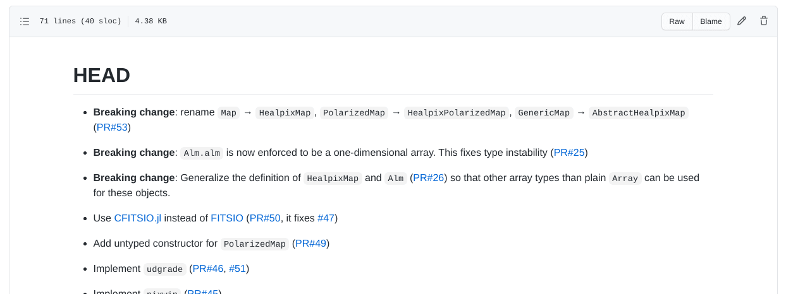
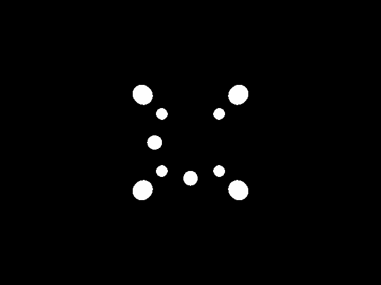

Calcolo numerico per la generazione di immagini fotorealistiche
Maurizio Tomasi maurizio.tomasi@unimi.it
Last week’s Python code intentionally contained an error in the
implementation of the ImageTracer.fire_ray method:
The error lies in the fact that the rows in HdrImage
are numbered from the top, not the bottom, while the
v coordinate increases
upwards. In the second line, however, the variable
v increases as row increases: this is
wrong!
The existence of this bug causes a vertical flip of the images: the top and bottom are swapped!
Yet we implemented tests!
Why didn’t we notice?
# These were the tests we implemented last week
image = HdrImage(width=4, height=2)
camera = PerspectiveCamera(aspect_ratio=2)
tracer = ImageTracer(image=image, camera=camera)
# Here we check that "u_pixel" and "v_pixel" do what they're supposed to do
ray1 = tracer.fire_ray(0, 0, u_pixel=2.5, v_pixel=1.5)
ray2 = tracer.fire_ray(2, 1, u_pixel=0.5, v_pixel=0.5)
assert ray1.is_close(ray2)
# Here we check that all pixels have been visited at least once
tracer.fire_all_rays(lambda ray: Color(1.0, 2.0, 3.0))
for row in range(image.height):
for col in range(image.width):
assert image.get_pixel(col, row) == Color(1.0, 2.0, 3.0)Our tests did not verify the correct orientation of the image: they were incomplete.
This kind of problem is common even in professional projects: there is a potential error condition that the tests do not cover, which is therefore not discovered during implementation.
Today we will see the right way to correct the error; next week we will discuss “debugging” at a higher level.
Corrections in a public repository like GitHub require these steps:
Report the problem on GitHub by opening an issue (synonyms: bug report or ticket). The issue will be assigned a unique number, e.g. #156.
Create a branch in the repository, calling it for example
fix156.
Modify the tests so that they highlight the error: once implemented, these new tests must obviously fail.
Only once the new tests are implemented can the bug be fixed.
When the new tests pass, open a PR linked to the branch, and if
everything works (including the CI builds) update the
CHANGELOG, merge, and close the issue.
The test we had written for ImageTracer was not
exhaustive…
…but it was already quite complex, because it verified two distinct things:
The correctness of the handling of u_pixel and
v_pixel
The fact that ImageTracer.fire_all_rays was able to
“visit” all the pixels of the image.
It is not advisable to add material to this test, otherwise if it fails in the future it would be less immediate to understand where the problem lies.
What we will do now is divide the test into three sub-tests:
In implementing this test in Python, I used a feature of the
testing framework (unittest) that probably also exists in
your frameworks.
def test_uv_sub_mapping():
# Create the objects to test
image = HdrImage(width=4, height=2)
camera = PerspectiveCamera(aspect_ratio=2)
tracer = ImageTracer(image=image, camera=camera)
ray1 = tracer.fire_ray(0, 0, u_pixel=2.5, v_pixel=1.5)
ray2 = tracer.fire_ray(2, 1, u_pixel=0.5, v_pixel=0.5)
assert ray1.is_close(ray2)
def test_image_coverage():
# Create the objects to test (same as above)
image = HdrImage(width=4, height=2)
camera = PerspectiveCamera(aspect_ratio=2)
tracer = ImageTracer(image=image, camera=camera)
tracer.fire_all_rays(lambda ray: Color(1.0, 2.0, 3.0))
for row in range(image.height):
for col in range(image.width):
assert image.get_pixel(col, row) == Color(1.0, 2.0, 3.0)The inelegance lies in the fact that we must create the
image, camera, and tracer objects
in every test.
Test frameworks (not all 🙁) usually provide the ability to invoke set-up procedures to create the objects on which the tests are then executed.
(Similarly, these frameworks also implement the ability to invoke tear-down procedures at the end of the tests, for example to delete temporary files created during the tests themselves).
class TestImageTracer(unittest.TestCase):
# This is invoked automatically whenever you run `pytest`
def setUp(self):
self.image = HdrImage(width=4, height=2)
self.camera = PerspectiveCamera(aspect_ratio=2)
self.tracer = ImageTracer(image=self.image, camera=self.camera)
def test_orientation(self):
# Fire a ray against top-left corner of the screen
top_left_ray = self.tracer.fire_ray(0, 0, u_pixel=0.0, v_pixel=0.0)
assert Point(0.0, 2.0, 1.0).is_close(top_left_ray.at(1.0))
# Fire a ray against bottom-right corner of the screen
bottom_right_ray = self.tracer.fire_ray(3, 1, u_pixel=1.0, v_pixel=1.0)
assert Point(0.0, -2.0, -1.0).is_close(bottom_right_ray.at(1.0))
def test_uv_sub_mapping(self):
ray1 = self.tracer.fire_ray(0, 0, u_pixel=2.5, v_pixel=1.5)
ray2 = self.tracer.fire_ray(2, 1, u_pixel=0.5, v_pixel=0.5)
assert ray1.is_close(ray2)
def test_image_coverage(self):
self.tracer.fire_all_rays(lambda ray: Color(1.0, 2.0, 3.0))
for row in range(self.image.height):
for col in range(self.image.width):
assert self.image.get_pixel(col, row) == Color(1.0, 2.0, 3.0)
These are the correct instructions to use in
ImageTracer.fire_ray:
If we commit this, the test will now pass:

At this point the bug is fixed, and we can proceed to close the issue.
It is very important, however, to first take a general look at the PR to verify that it is clearly legible. In particular, select the Files changed tab and read it critically:
Are the files being modified the ones I expect, or are there other changes that I was working on when the bug was discovered? (See this example).
Will those who see these changes be able to understand them without reading the entire codebase?
Avoid including «gratuitous» changes…

Example taken from a PR for pytracer
GitHub tracks a repository’s bugs on a dedicated page: you can see which bugs are open and which have been closed.
But, as with commits, a list of bugs is quite poor, and doesn’t tell a “story.”
Let’s see now the purpose of the CHANGELOG.md file, which is a type of documentation.
All public repositories should have a
CHANGELOG/NEWS/HISTORY/… file,
which lists the bugs fixed and the new features of the code, listed by
version number.
See for example the HISTORY.md
file of the Julia compiler
In a CHANGELOG file you should indicate all the
corrections and modifications made to the code.
No need to be verbose: one or two lines per change are sufficient, if you include the link to the issue/pull request
It should be written in reverse chronological order: the most recent changes are at the top. This makes it easier for the reader to see what’s new in the latest version (which is likely the one they want to download).
It is usually divided into sections, one for each version of the
code. The first section is usually called HEAD, and
contains the corrections and modifications that will end up in the next
future version of the code.

In the pytracer repository
there is a CHANGELOG.md file, written in Markdown, which
you can use as inspiration. In particular, “our” bug appears like
this:
Remember from now on that the last commit in a
PR should always be the update of
CHANGELOG.md!

We need to implement shapes in our code.
For today, it is sufficient to implement a Sphere
type; if you want, add also a Plane (it’s very quick to
add).
Create an abstract type Shape, which implements the
(abstract) method ray_intersection. This accepts a
Ray parameter and returns a HitRecord type. If
your language supports it, you can make the return type
nullable (intersection exists/doesn’t exist).
Shape in PythonHitRecordTo return information about an intersection, it’s good practice
to use a dedicated type: HitRecord.
This type should contain the following information:
world_point: 3D point where the intersection occurred
(Point);normal: surface normal at the intersection
(Normal);surface_point: (u, v)
coordinates of the intersection (new type Vec2d);t: ray parameter associated with the intersection;ray: the light ray that caused the intersection.For testing, it’s helpful if it implements an
is_close/are_close method.
Sphere in PythonThe number of intersections between the ray O + t \vec d and the sphere depends on the sign of
\frac\Delta4 = \left(\vec O \cdot \vec d\right)^2 - \left\|\vec d\right\|^2\cdot \left(\left\|\vec O\right\|^2 - 1\right).
If \Delta > 0, the two intersections are
t = \begin{cases} t_1 &= \frac{-\vec O \cdot d - \sqrt{\Delta / 4}}{\left\|\vec d\right\|^2},\\ t_2 &= \frac{-\vec O \cdot d + \sqrt{\Delta / 4}}{\left\|\vec d\right\|^2}. \end{cases}
Sphere in PythonYou must inverse transform the ray before calculating the intersection:
Once you have calculated t1 and t2, you
must determine which of the two intersections is closest to the ray
origin:
You must implement the calculation of the normal at the
intersection point; in the pytracer
code this is done inside _sphere_normal:
You also need code that calculates the intersection point on the
sphere’s surface, in (u, v)
coordinates, for which a new Vec2d type is useful:
HitRecordSphere (1/2)In all these cases, also verify the (u, v) coordinates and the value of t.
Sphere (2/2)In all these cases, also verify the (u, v) coordinates and the value of t.
World TypeWorld type.Shape objects: take care to
declare this list correctly, as some languages may require special care
for lists of abstract objects (e.g., a trait
object vector in Rust).ray_intersection method that
iterates over the shapes, searches for intersections, and returns the
one closest to the ray origin.World in Pythonclass World:
def __init__(self):
self.shapes = []
def add(self, shape: Shape):
self.shapes.append(shape)
def ray_intersection(self, ray: Ray) -> Optional[HitRecord]:
closest = None # "closest" should be a nullable type!
for shape in self.shapes:
intersection = shape.ray_intersection(ray)
if not intersection:
continue
if (not closest) or (intersection.t < closest.t):
closest = intersection
return closestThe asymmetry in the arrangement of the spheres allows for the identification of errors in the ordering of the rows/columns of the image.
OrthogonalCamera or
PerspectiveCamera.mainmain has so far been able to convert a PFM image
into another format (PNG, JPEG, WebP, etc.)demo mode, where it generates the image described
above.In Python, I used the Click library, which allows building command-line user interfaces that support so-called actions (other libraries call them verbs).
After the executable name, a command should be provided, optionally followed by parameters:
./main.py pfm2png input.pfm output.png
./main.py demo --width=480 --height=480
./main.py --help
...Actions exactly like Click (if your library supports them);
Two separate executables: demo and
pfm2png
Requesting input from the terminal (not recommended):
Et cetera…
demo CommandWorld object with the 10 spheres in the
indicated positions;OrthogonalCamera or
PerspectiveCamera object (pytracer
allows the user to choose);ImageTracer object;An on/off ray-tracer checks if the ray has hit a surface, and if so, colors the pixel with an arbitrary color (white), otherwise it colors it with the background color (black).
In our case, it is sufficient to invoke
fire_all_rays by passing a one-line function as an
argument:
In demo mode, the Python code allows modifying the
orientation of the observer relative to the axes using the
--angle-deg flag.
This can be used to generate animations through simple Bash scripts:
for angle in $(seq 0 359); do
# Angle with three digits, e.g. angle="1" → angleNNN="001"
angleNNN=$(printf "%03d" $angle)
./main.py demo --width=640 --height=480 --angle-deg $angle --output=img$angleNNN.png
done
# -r 25: Number of frames per second
ffmpeg -r 25 -f image2 -s 640x480 -i img%03d.png \
-vcodec libx264 -pix_fmt yuv420p \
spheres-perspective.mp4CHANGELOG.md file;demo branch;Shape, Sphere,
World, Vec2d types;demo command, in the way you prefer (you
can look for a library to interpret the command line);CHANGELOG.md file.If you like the command-line interface provided by Pytracer, have a look at the list of libraries available in the repository Awesome C++ [CLI].
To implement the World type, use make_shared
and shared_ptr:
in this way, you avoid calling new and delete
to create/destroy objects derived from Shape. (Both
new and delete should be avoided whenever
possible: they are rarely needed in real-world code!)
shared_ptr#include <iostream>
#include <memory>
#include <vector>
using namespace std;
struct Shape {};
struct Sphere : public Shape {};
struct Plane : public Shape {};
int main() {
// This would work even if "Shape" were an abstract type
std::vector<std::shared_ptr<Shape>> list_of_shapes;
// This calls "new" automatically, and it will call "delete" at the end
list_of_shapes.push_back(make_shared<Sphere>());
list_of_shapes.push_back(make_shared<Sphere>());
list_of_shapes.push_back(make_shared<Plane>());
}Don’t worry too much for the command-line interface: Julia
programs are not meant to be executed from the command line. You could
just provide a script named demo.jl alongside another
script called pfm2png.jl.
Define an abstract struct for Shape and
then derive Sphere, Plane, etc..
In this lesson, you will likely see how elegant can be mathematical code in Julia!
Today there should not be significant issues.
If you want to implement a good command-line interface, have a look at the repository Awesome .NET [CLI].